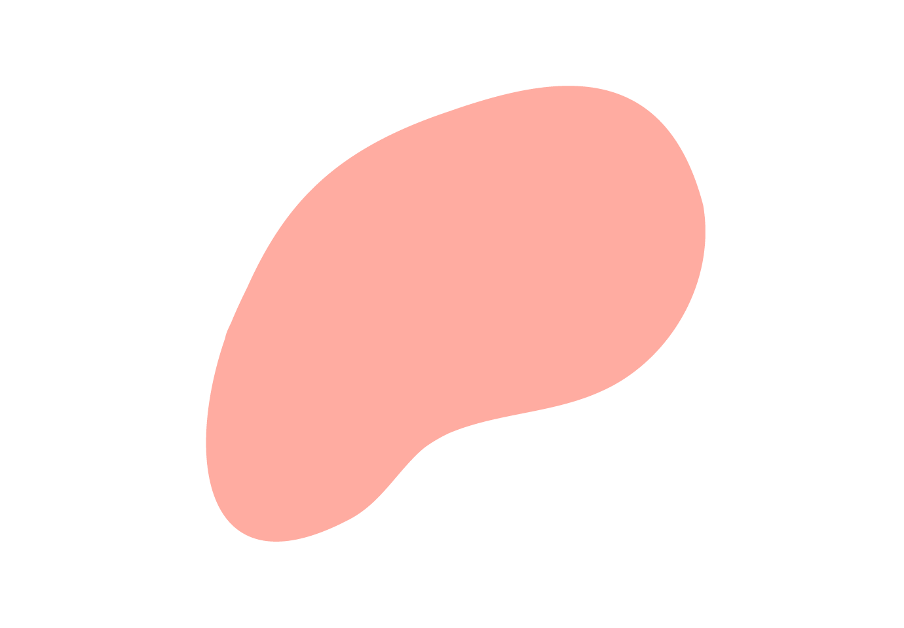

Stephanie
Kwolek

Born in New Kensington, PA, Kwolek developed a love of fabrics and sewing from her mother, a homemaker. She also had a strong interest in teaching, chemistry, and especially medicine. After graduating from Margaret Morrison Carnegie College in 1946 with a degree in chemistry, Kwolek applied for a position as a chemist with the DuPont Company.

Most notable among these is Kevlar®, a heat-resistant material that’s five times stronger than steel, but lighter than fiberglass. Today, Kevlar® is used in hundreds of products, including bulletproof vests, spacecrafts, helmets, tennis racquets, tires, and protective gloves.